第3章 アプリケーション内部の仕組み
前の章では、主にBeOSの内部構造について説明しました。この章では、BeOSアプリケーションの内部を見ておくことにします。サンプルアプリケーションを使った第5章以降の説明と、本章の説明を合わせて読めば、BeOSでのアプリケーションプログラミングについてより深く理解することができるでしょう。
3.1 BeOSのアプリケーション
アプリケーションの内部構造を説明する前に、その外観をざっと見てみましょう。第5章以降のサンプルアプリケーションもそうですが、まずアプリケーションの動きを見ておくと、その内部を理解しやすくなります。3.1.1 一般的な外観
図3.1～3.4に、BeOSのアプリケーションを撮ったスクリーンショットを示します。図3.1と3.2はBeOS付属のもの、そして図3.3と3.4はサードパーティー製のものです。
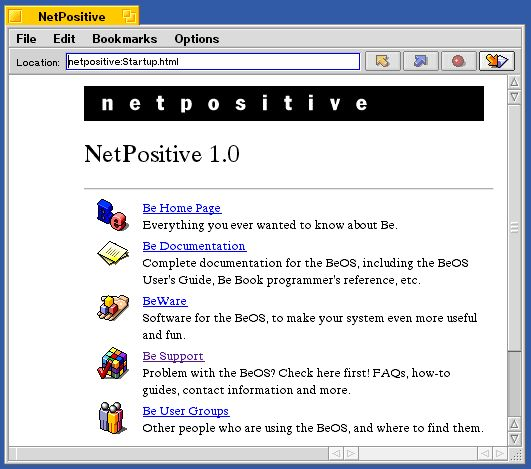
図[3.1] NetPositive
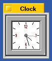
図[3.2] Clock

図[3.3] AudioElements
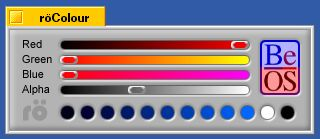
図[3.4] roColor
どのアプリケーションも、タブ付きのウィンドウを開き、ウィンドウのタブや枠をドラッグして動かせるのは変わりません。違うのは、ウィンドウの数や大きさ、そしてウィンドウに表示されている内容だけです。おっと、よく見るとウィンドウの枠やタブの様子は、アプリケーションによって違うものがありますね。図3.1のNetPositiveや図3.2のAudio Elementsでは、ウィンドウ右下隅の枠部分にリサイズ用のつまみがありますが、図3.2のClockや図3.4のroColorには、これがありません。また、ウィンドウのタイトルを表示するタブの右隅にズームボタンがあるかどうかも、アプリケーションによって違います。実は、これらの違いはウィンドウを作る時に指定でき、一つのアプリケーションの中で色々な種類のウィンドウを扱うことができるのです。
次に、図3.1と図3.3をもう一度見てみて下さい。これらのアプリケーションでは、ウィンドウの上端にメニューバーがあります。普段Macintoshを使っている人には馴染みのない画面かも知れませんが、BeOSではMacOSと違って、ウィンドウごとにメニューバーが存在します。これは、WindowsやUnix系OSを使っている人にとっては見慣れた画面でしょう。もちろん、個々のウィンドウにメニューバーを付けるかどうかは、アプリケーション側で自由に制御できます。
また、アプリケーションが開いたウィンドウを全て閉じると、それに合わせてアプリケーションが終了するところもWindowsに似ています。MacOSでは、ウィンドウを全部閉じてしまってもアプリケーションが終了することはないのが普通です。これは、MacOSの場合ウィンドウとメニューバーが独立しており、現在フロント(アクティブ)になっているアプリケーションのメニューバーが常に画面上端に表示されるという違いから来るものです。
3.1.2 ファイルのオープンとセーブ
ファイルの読み書き機能を持つアプリケーションでは、ファイルをオープン又はセーブする際に標準ダイアログを開き、ユーザがファイルを指定できるようにします。この標準ダイアログ(ファイルパネル)はシステムのAPIとして提供されており、どのアプリケーションでも平等に利用できるのは、他のOSの場合と変わりません。ただし、ダイアログの振る舞いは若干異なります。まず、他のOSの場合とは違い、BeOSのファイルパネルはモーダル動作しないのが普通です(注3-1)。つまり、ファイルパネルが開かれた状態でも、他のウィンドウをクリックしてフロントに出すことができるのです。他のOSの場合はファイルパネルがモーダル動作しますので、それが開かれた状態では他のウィンドウが一切マウスクリックに応答しないか(MacOSの場合)、または他のアプリケーションに所属するウィンドウはよくても、ファイルパネルを開いたのと同じアプリケーションに所属するウィンドウはマウスクリックに応答しません(Windowsなど)。
モーダルと非モーダル、どちらの振る舞いがユーザにとって好ましいのかは議論を呼ぶところです。とはいえ、BeOSのファイルパネルがデフォルトで非モーダル動作をする以上、実際にプログラミングする場合は、そのことを考慮しておく必要があります。第10章の説明に使うサンプルアプリケーションでは、ファイルパネルの利用例を示します。また、BeOSではファイルがどのように扱われるのかについては、この後の3.4節で説明します。
- (注)3-1
- BeOSのファイルパネルは、モーダル動作するかどうかをオプションで指定できるようになっています。デフォルトではモーダル動作しません。
3.1.3 初期設定ファイル
アプリケーションの初期設定ファイルは、起動ボリュームのhome/config/settingsフォルダ(/boot/home/config/settings)に置かれます。ただし、これはシングルユーザ環境を前提とする現在のBeOSが持つ仕様であり、将来BeOSがマルチユーザ環境をサポートするように拡張されるとすれば、それに合わせて変更が加えられるでしょう。なお、初期設定ファイルのデータフォーマットはアプリケーション側で好きに決めてよく、特に規定はありません。また、初期設定フォルダ(/boot/home/config/settings)の中に専用のフォルダを作り、そこに複数のファイルを格納しても構いません。第9章では、初期設定ファイルを使うアプリケーションのサンプルを示します。
第9章のサンプルアプリケーションでは、テキスト形式の初期設定ファイルを作って使います。これはファイルに保存する初期設定情報が単純なものであることと、また説明の順番からくる都合によるものであり、バイナリ形式で保存しても全く構いません(注3-2)。複雑な初期設定情報を扱う場合は、3.5節で説明するBMessageクラスの機能を利用して構造化データをファイルに保存すると、読み書き処理が簡単になります。この場合、保存されるデータはバイナリ形式になりますが、そのようにしているアプリケーションは多いようです。
- (注)3-2
- 初期設定ファイルをテキスト形式にするかどうかは、好みで分かれるところです。テキスト形式で保存すると、保存内容をテキストエディタで編集できるので保守が簡単です。その反面、複雑な形式のデータを保存しようとすると読み書き処理が面倒になってしまいます。
3.2 アプリケーションの内部動作
前節では、外部から見たアプリケーションの動作を述べました。この節からは、いよいよアプリケーションの内部を見ていきます。まず、BeOSアプリケーションの動作を理解するうえで最も基本となる、メッセージループについてこの節で解説します。それから、BeOSらしいアプリケーションの特徴であるマルチスレッド処理、そしてBeOSのファイルシステム、および様々な場面で重要な役割を果たすBMessageクラスのそれぞれについて、残りの二つの節で解説を行います。3.2.1 アプリケーションの実行
2.5節で、アプリケーションが実行される仕組を簡単に述べました。アプリケーションの実行ファイルがOSによってメモリにロードされ、それをCPUが読み取って、内容に従った処理を開始するというものです。この説明は少々単純過ぎるものであり、実際にはもう少し複雑な仕組が存在しています。図3.5に、OS(マイクロカーネル)がアプリケーションを起動する実際の手順を示します。
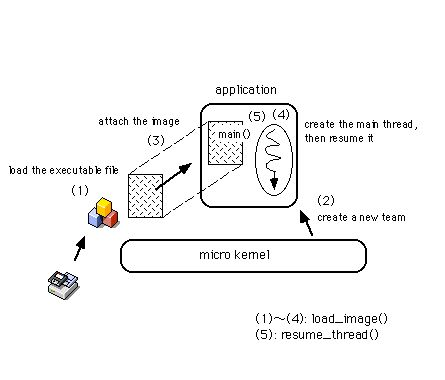
図[3.5] プロセスを生成してアプリケーションの実行が開始される様子
図に示したように、マイクロカーネルは以下のようにしてアプリケーションを起動し、動作させます:
1.)アプリケーションの実行ファイルの内容をメモリにロードする。
2.)新しいプロセス(チーム)を生成する。
3.)生成したプロセスに、メモリにロードした実行ファイルの内容を渡す。
4.)プロセスのメインスレッドを生成する。
5.)メインスレッドに、main()ルーチンの実行を指示する。
以上の手順をマイクロカーネルに行わせるには、Kernel Kitのload_image()とresume_thread()を使います(注3-3)。load_image()は、起動するアプリケーションの実行ファイルを指定して(1)～(4)を行わせるものです。その後、resume_thread()によってアプリケーションの動作を開始する、すなわち手順の(5)が行われます。なお、resume_thread()は停止状態のスレッドの動作を再開させるものです。スレッドは、生成された直後は停止状態にあるため、load_image()によって生成されたメインスレッドに対してresume_thread()を呼び出す必要があるのです。"Kernel Kit"については2.6節で簡単に紹介しましたが、マイクロカーネルが提供する機能を呼び出すためのAPIです。
さて、この節の主題であるメッセージループの説明へ進む前に、プロセスとスレッドの関係について整理しておきましょう。図3.6に、これらの関係を示します。
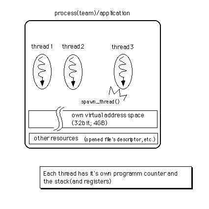
図[3.6] プロセス/チームとスレッドの関係(スレッドの生成手順も)
まず、「スレッド」はプログラムの実行主体、言い換えれば、アプリケーションが動作する時の実行の流れそのものです。次に、「プロセス」は動作しているアプリケーションの実体を指します(注3-4)。つまり、スレッドとアドレス空間、およびアプリケーションが開いたファイルなど、アプリケーションの動作に必要な資源全てを合わせたものがプロセスです。一つのアプリケーションプロセス中に複数のスレッドが存在し、互いに並行して動くことが可能です。これを指して、「アプリケーションがマルチスレッド化されている」と言います。アプリケーションがマルチスレッド化されているかどうかに関わらず、どのプロセスにも必ず一つはスレッドが存在します。これはload_iamge()によってプロセスが生成された時、最初に作られるスレッドです。このスレッドを「メインスレッド」と呼びます。
また、BeOSでは同じプロセスに所属するスレッドの集合を「チーム」と呼びます。チームにスレッドを追加するには、Kernel Kitのspawn_thread()を使います。この手続きを呼び出すとスレッドが一つ生成され、呼び出したスレッドが所属するチームに追加されます。スレッドを他のチームに移動させることはできませんので、チームというのは、アプリケーションのメインスレッドと、そのアプリケーションがspawn_thread()によって生成したスレッドを全て合わせたもの、と表現することもできます。
チームを構成する全てのスレッドが実行を終了した時、プロセス、すなわちアプリケーションの動作も終了します。その際、アプリケーションが使用していたメモリ領域は、マイクロカーネルによって解放されます。
- (注)3-3
- Unix系のOSでは、fork()とexec()というシステムコールを使ってアプリケーションの起動を行うのが一般的です。BeOSのload_image()は、このfork()とexec()を合わせたものに相当します。Unix系OSに慣れた人はfork()がないと不便に感じるかも知れませんが、fork()の代わりにspawn_thread()を使ってマルチスレッド処理する方が、現代的なやり方だと思います。
- (注)3-4
- 実は、BeOSの用語には「プロセス(process)」という単語がありません。しかし、プロセスは他のOSで一般的な用語なので、ここでは敢えて使っています。
3.2.2 入力イベントの通知
外側から観たアプリケーションの動きについて3.1節で述べましたが、ユーザがアプリケーションを操作するやり方は、BeOSも他のOSと同じです。つまり、ウィンドウに付いているメニューから指定したい項目を選択したり、あるいはボタンをクリックして行うべき動作を指示します。また、テキスト入力部品をクリックしてカーソルを表示させ、テキストをタイプ入力することもできます。このような、ユーザの入力操作によって生じたイベントは、app_serverの働きによってメッセージに変換され、アプリケーションに届けられるということは前の章で既に述べました(2.3節)。このメッセージ通知の仕組について、もう少し詳しく説明します。
BeOSでは、アプリケーションはapp_serverから送られてくるイベントメッセージが届くのを待ち、メッセージが届いたら順に処理するというループ動作を行うのが基本です。とはいえ、全てのアプリケーションがループ動作を行う必要はありません。たとえば、リスト3.1はC言語の教科書で最初に出てきそうなプログラムですが(注3-5)、これは端末に“Hello World.”と出力しただけで終了します。つまり、メッセージ処理のためのループ動作は行いません。
[リスト3.1] メッセージを表示する単純なサンプル
#include <stdio.h>
int
main (void)
{
printf("Hello World.\n");
return 0;
}
メッセージ処理のためのループ動作、つまり「メッセージループ」は、ウィンドウを開いて何かを表示するようなアプリケーションでなければ必要ないものです。つまり、ウィンドウに付けたメニューやボタンなどのGUI部品を通じてユーザの入力を受け取ったり、また他のアプリケーションと通信するような「BeOSらしい」アプリケーションだけが行う動作なのです。逆に、BeOSらしいアプリケーションであれば必ず行うべき動作ですから、メッセージループ機能はBeOSのAPIによって提供されており、自分でプログラミングせずに済むようになっています。
[リスト3.2] 一般的なBeOSのmain()ルーチン
#include <app/Application.h>
int
main (void)
{
MyApplication appObj; /* AvP[VIuWFNg */
appObj.Run(); /* bZ[W[vs */
return 0;
}
リスト3.2は、一般的なBeOSアプリケーションのmain()ルーチンを示したものです。ここで使っている“MyApplication”クラスは、BeOSのAPI(Application Kit)が提供しているBApplicationクラスを継承したサブクラスです。BApplicationクラスではメッセージループを実行するRun()メソッドを定義しているので、アプリケーションは、単にこのメソッドを呼び出せば済むのです。一方、BApplicationクラスの方では、Run()メソッド内のメッセージループからメッセージに応じたメソッド呼び出しを行います。呼び出すメソッドは、メッセージハンドラとしてBApplicationクラスに用意されているもので、サブクラスで再定義することが可能です。
BApplicationのサブクラスを作って、メッセージハンドラとして働くメソッドのうち必要なものを再定義していく実例は、第5章以降のサンプルコードで示します。ここではメッセージループの働きを考えることに集中しましょう。図3.7に、BApplicationクラスまたはそのサブクラスのインスタンス、つまりアプリケーションオブジェクトがメッセージループを実行する様子を示します。
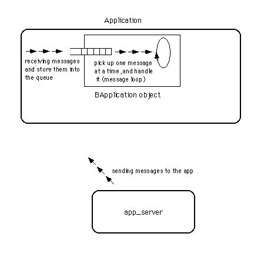
図[3.7] BApplicationによるメッセージループの実行
図に示したように、アプリケーションオブジェクトは、app_serverから送られたメッセージを一旦キューに格納します。そして、キューに溜まったメッセージを一つずつ取り出し、順番に処理するのです(注3-6)。ここまで読むと、MacOSや、それからUnix系OSで一般的なX Window Systemの場合と似ていることに気付くでしょう。これらのシステムでは、ユーザの入力操作によって生じたイベントが各アプリケーションのイベントキューに格納され、アプリケーションはキューに溜まったイベントを一つずつ取り出して処理します。ただし、これらのシステムとBeOSとでは、大きく違う点があります。
MacOSやX Window Systemでは、アプリケーションはイベントキューを一つしか持ちません。それに対し、BeOSのアプリケーションは複数のメッセージキューを持つことができるのです。BeOSでは、アプリケーションオブジェクトの他に、各ウィンドウがそれぞれのメッセージキューを持ち、app_serverからメッセージを受け取ることが可能です。これについて、次の3.2.3でWindowsとの比較も入れた説明をします。
- (注)3-5
- BeOSでのプログラミングはC++が基本なので、C++らしくiostreamを使って“Hello World”を書くべきだと思う人がいるかも知れません。しかし、iostreamのライブラリをリンクしようとすると、アプリケーションの実行ファイルサイズが64KBを超えてしまい、BeOS付属のCodeWarrior Liteでは作成できないのです。
- (注)3-6
- app_serverとアプリケーションオブジェクトの通信は、3.2.4で説明するスレッド間通信機構によって行われます。app_serverは、アプリケーションオブジェクトが持つ「ポート」にメッセージを書き込み、それをアプリケーションオブジェクトが読み出してメッセージキューに格納します。
3.2.3 他のOSとの比較
入力イベントをアプリケーションが処理する仕組の違いを見るために、ウィンドウをクリックした場合について、それぞれのOSごとの(注3-7)処理の流れを図3.8～3.10に示しました。
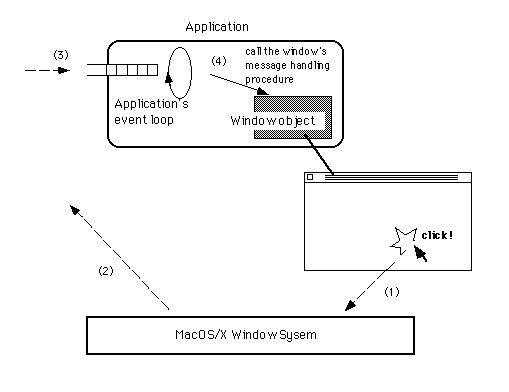
ウィンドウのクリック図[3.8] MacOSやX Window Sytemの場合
→システムがイベントを生成
→アプリケーションのイベントキューにイベントを格納
→アプリケーションがイベントを解釈し、クリックされたウィンドウに渡す
→ウィンドウがイベントを処理
という流れ
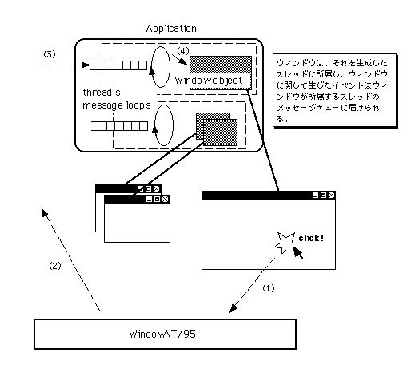
ウィンドウのクリック図[3.9] WindowsNT/95の場合
→システムがメッセージを生成
→ウィンドウを持つスレッドのメッセージキューにメッセージを格納
→スレッドがメッセージを解釈し、クリックされたウィンドウに渡す
→ウィンドウがメッセージを処理
という流れ。スレッドが複数あり得ることを示したい。
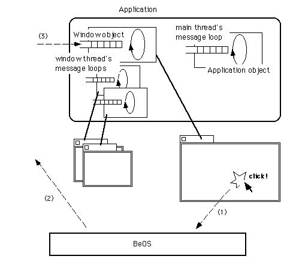
ウィンドウのクリック図[3.10] BeOSの場合
→システムがメッセージを生成
→ウィンドウのメッセージキューにメッセージを格納
→ウィンドウがメッセージを処理
という流れ。他の二つのシステムに比べ、ステップの数が一つ少ないことを示し
たい。
上に示した図から分かるように、それぞれのOSが持つイベントの処理機構の間には、以下の違いがあります。
■MacOSやX Window System
ユーザ入力によって生じたイベントは、アプリケーションのイベントキューに届けられる。アプリケーションは一つしかイベントキューを持たず、全てのイベントをアプリケーションが解釈しなければならない。アプリケーションは、届いたイベントに関連するウィンドウを見つけ出し、そのウィンドウにイベントを渡して処理させる。
■WindowsNT/95
ユーザ入力によって生じたイベント(メッセージ)は、スレッドのメッセージキューに届けられる。メッセージキューはスレッドごとに一つずつ持てるので、アプリケーションがマルチスレッド化されていれば複数のメッセージキューがある。スレッドは、届いたメッセージに関連するウィンドウを見つけ出し、そのウィンドウにメッセージを渡して処理させる。
■BeOS
ユーザ入力によって生じたイベント(メッセージ)は、アプリケーションオブジェクトやウィンドウオブジェクトのメッセージキューに届けられる。アプリケーションオブジェクトとウィンドウオブジェクトは、それぞれ一つずつメッセージキューを持つ。ウィンドウに関連するメッセージは直接ウィンドウオブジェクトに届くので、ウィンドウオブジェクトは直ぐにメッセージを処理できる。
上に挙げた三通りの仕組を比べると、WindowsNT/95は、MacOSやX Window Systemの仕組とBeOSの仕組の中間的なものであることが分かります。別の言い方をすると、MacOSやX Window Systemの仕組は最も古典的なものであり、それをマルチスレッド向けに進化させたのがWindowsNT/95、そして、最も新しい仕組をとっているのがBeOSです。この「進化」の順位づけは、マルチスレッド処理をどれだけ活用できるかに基づいています。
アプリケーションが一つしかイベントキューを持たない、MacOSやX Window System方式がマルチスレッド処理を活かせない理由は、イベント処理の流れを考えれば分かるでしょう。つまり、たとえアプリケーションがマルチスレッド化されていても、アプリケーションが受け取ったイベントは全て一箇所に集められ、その後でウィンドウなどの関連するモジュールに届けられます。したがって、そこがボトルネックになってしまうのです。
これに対し、BeOSではアプリケーションオブジェクトやウィンドウオブジェクトが全て専用のメッセージキューを備えており、それらのオブジェクトに直接メッセージが届けられます。次の3.2.4で説明するように、メッセージはマイクロカーネルが提供するスレッド間通信機構を使ってapp_serverから送られます。MacOSやX Window Systemの場合と違い、メッセージが一旦アプリケーションの中の一箇所に集められるのではなく、最初から関連するオブジェクトに届けられるので、ボトルネックが生じないのです。そして、そのぶんマルチスレッドによる並行処理の効率が良くなります。
- (注)3-7
- X Window System自体はOSではありません。しかし、ここではBeOSと他のOSとを比較した説明の都合上、OSの中に括ってしまっています。
3.2.4 BLooperとメッセージループ
BeOSでは、アプリケーションオブジェクトとウィンドウオブジェクトがそれぞれ専用のメッセージキューを持つと上で述べました。それは、それぞれに対してスレッドが割り当てられ、独立したメッセージループ動作を行うということでもあります。つまり、アプリケーションオブジェクトに届いたメッセージとウィンドウオブジェクトに届いたメッセージは、それぞれ別のスレッドによって処理されるのです。3.2.2で、アプリケーションに必要なメッセージループの機能は、BeOSのAPIとして提供されていることを述べました。専用のスレッドとメッセージキューを持ち、メッセージループを実行する機能は、Application Kitの“BLooper”クラスによって提供されています。アプリケーションオブジェクトの基本クラスであるBApplicationや、ウィンドウオブジェクトの基本クラスであるBWindowは、どちらもBLooperクラスを継承しています。これら三つのクラスの概要を以下に述べます。
■BLooperクラス
メッセージループを実行するためのスレッドと、自分宛に届いたメッセージを格納するメッセージキューを持ちます。Run()メソッドが呼び出されると、スレッドを生成してメッセージループ動作を開始します。動作を停止させるにはQuit()メソッドを呼び出します。
■BApplicationクラス
BLooperのサブクラスです。Run()メソッドを再定義しており、スレッドを生成しないようになっています。したがって、アプリケーションオブジェクトのメッセージループ動作は、Run()メソッドを呼び出したスレッド、すなわちアプリケーションのメインスレッドによって行われます。このクラス、およびそのサブクラスのインスタンスは、一つのアプリケーションで一つしか生成できません。
なお、2.6で紹介したAPIのうち、POSIX APIとKernel Kit以外のAPIを利用する場合、必ずアプリケーションオブジェクトを生成しなければいけません。アプリケーションオブジェクト、すなわちBApplicationクラスまたはそのサブクラスのインスタンスを生成すると、BApplicationクラスの働きによって必要な初期化動作が行われ、それではじめて各種APIを呼び出せるようになるのです。
■BWindowクラス
BLooperのサブクラスです。ウィンドウを画面に表示し、ユーザ入力によって生じたメッセージを受け取って処理します。ウィンドウを開くにはShow()メソッドを呼び出します。Show()メソッドの中ではRun()メソッドを呼び出してメッセージループ用のスレッドを生成するため、BWindowクラスの利用者側ではRun()メソッドを呼び出す必要がありません。
BLooperのサブクラスはBApplicationとBWindowの二つだけです。もちろん、BLooperのサブクラスを自分で定義して使うことは可能ですし、そうすることによってマルチスレッドのプログラミングが簡単になります。BLooperクラスは、Kernel Kitが提供しているスレッド操作APIやスレッド間通信のAPIを内部で利用しており、それらを直接使ってプログラミングするよりも便利な機能を提供してくれているからです。このことについては、3.3節で詳しく述べます。
なお、BApplicationクラスとBWindowクラスは、BLooperにない重要な特徴があります。これらのクラスおよびそのサブクラスのインスタンスを生成してメッセージループを開始させると、それに対応してapp_server内部にもスレッドが生成され、互いに連携して動き始めるのです。図3.11に、この様子を示します。
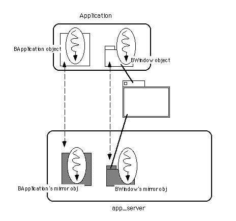
図[3.11] アプリケーション内のスレッドとapp_server内のミラースレッド
図3.11を見ると分かるように、アプリケーションが起動し、そしてウィンドウを一枚開くと、それだけでシステム内に四つのスレッドが生じます。つまり、アプリケーションのメインスレッドとウィンドウのスレッドがアプリケーション内にあるのでまず二つ、それからapp_server内にはそれらのミラースレッドがあるので、合計四つです。これらのスレッドは全て並行動作し、マルチプロセッサ機の場合はそれぞれ別のプロセッサを使って並列に動くことが可能です。このように、特に意識しないでプログラミングしても、アプリケーションが自然にマルチスレッド化されるのがBeOSの大きな特徴です。
3.2.5 BHandlerによるメッセージ応答
ユーザ入力によって生じたメッセージが、どのようにアプリケーションへ届けられるのかについては分かりました。では、受け取ったメッセージはどのように処理されるのでしょう。この節を終わる前に、そのことについて説明します。
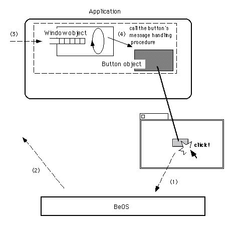
ウィンドウのボタンをクリック図[3.12] ボタンのクリック操作にアプリケーションが応答するまでの流れ
→システムがメッセージを生成
→ウィンドウのメッセージキューにメッセージを格納
→ウィンドウがボタンのメソッドを呼び出す
→ボタンがメッセージに応答
という流れ。
図3.12は、ウィンドウに付いているボタンをクリックした時に、それがアプリケーションに伝えられて応答動作をするまでの処理の流れを示したものです。図に示した流れのうち、ボタンがクリックされたことを伝えるメッセージが、ウィンドウオブジェクトに届けられるまでについて既に説明しました。ここで見るべきは、その後です。届いたメッセージをメッセージキューから一つずつ取り出し、それを処理するのはメッセージループ用の「ウィンドウスレッド」の役割ですが、このスレッドは、メッセージに対して応答すべきオブジェクトを探してメッセージを渡すのが主な仕事です。
メッセージに対して応答すべきオブジェクトというのは、図3.12でいうとボタンのことです。ウィンドウスレッドは、BWindowクラス、厳密にはBWindowが継承しているBLooperクラスの働きによって、ボタンオブジェクトにメッセージを渡します。このメッセージ渡しは、ボタンオブジェクトのMessageReceived()メソッドを呼び出すことで行います。MessageReceived()メソッドは、Application KitのBHandlerクラスで定義されているもので、サブクラスで再定義して必要な応答処理を実装するためのものです。ボタンなどのビューオブジェクトは、すべてInterface KitのBViewクラスに所属していますが、BViewクラスはBHandlerクラスを継承し、ユーザ入力を伝えるメッセージに応答できるようになっています。
つまり、アプリケーションがメッセージを処理するための仕組は、BLooperクラスとBHandlerクラスの組み合わせによって実現されているのです。図3.13に、この二つのクラスが連携してメッセージを処理する際の流れを示します。
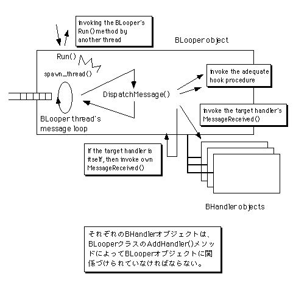
BLooperクラスのRun()によるスレッドの生成図[3.13] BLooperクラスとBHandlerクラスによるメッセージ処理
→定期的にDispatchMessage()を呼び出す
→メッセージに応じたフック関数を呼び出す
→指定されたBHandlerオブジェクトのMessageReceived()を呼び出す
→自分自身を指定された場合は、自身のMessageRecived()を呼び出す
という流れ。
BLooperクラスのメッセージループでは、メッセージキューから取り出したメッセージを取り出すと、自身に対してDispatchMessage()メソッドを呼び出します。このメソッドでは、メッセージの内容を見てどのように処理するかの振り分けを行います。つまり、内容によっては直接自身のメソッドを呼び出して処理し、そうでない場合は、メッセージを届けるべきBHandlerオブジェクトを探してMessageReceived()メソッドを呼び出します。
BLooperとBHandler、それからアプリケーションオブジェクトやウィンドウオブジェクトの間の関係を整理するために、これらの間のクラス階層を図3.14に示します。
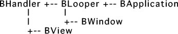
図[3.14] 以下のような内容
図3.14で、BLooperクラスもBHandlerクラスを継承していることに注目して下さい。これは、BLooperクラス自身がメッセージの最終的な届け先となり、MessageReceived()メソッドによる応答動作を行えるということです。これによって、BHandlerオブジェクトを使わずにBLooperオブジェクトだけでメッセージ処理を行うことも可能になっています。
なお、BeOSのAPIではメッセージも一つのクラスになっています。“BMessage”というのがそうですが、3.5節では、このクラスが持つ便利な機能を説明します。
3.3 マルチスレッドによる並行処理
ここまでの説明で、BeOSではマルチスレッド処理が基本になっていることが分かったでしょう。だからこそ、BeOSはマルチプロセッサ機の性能を十分に引き出すことができるのです。しかし、それはBeOSでプログラミングをしようとすると、マルチスレッドによる並行処理にまつわる問題を避けて通れないことも意味しています。この節では、並行処理に関するプログラミング上の問題、およびそれを解決し易いようにBeOSのAPIが提供している仕組について説明します。3.3.1 並行処理と共有データ
マルチスレッドによる並行処理にまつわる問題とは、一体何でしょうか?一言でいえば、スレッド同士の処理が衝突するのをいかにして防ぐかということです。複数のスレッドが並行して処理を進めるとき、その間で共有しているデータがあると、スレッド同士の処理が衝突してしまう可能性があります。例として、複数のファイルに対するデータ変換処理をマルチスレッドで行う場合を考えてみましょう。いま、ユーザから指定された複数のテキストファイルに対して、その文字コードをUTF-8/UnicodeからShift JISへ一括変換するアプリケーションを作っているとしましょう。このアプリケーションでは、ファイルを一つずつ取り出して変換するのではなく、二つのスレッドを使って二つずつ同時に変換することにします。その場合、変換処理が済んだファイルとそうでないファイルを区別する必要がありますので、図3.15のようなファイル情報のリストを持ち、処理が済んだファイルに対してマークを付けていくことになるでしょう。
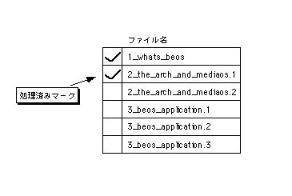
図[3.15] 一括変換用のファイル情報リスト
つまり、二つのスレッドは次のような手順で処理を進めます。
1.)処理済みのマークが付いていないファイルを、ファイル情報のリストから探す。
2.)未処理のファイルが見つかったら、処理済みのマークを付ける。
3.)未処理のファイルが見つからなければ、処理を終了する。
4.)見つけた未処理のファイルに対して変換処理を行う。
5.)変換処理が終わったら、(1)に戻って繰り返す。
さて、この手順で処理を進める場合、二つのスレッドはファイル情報リストを共有することに注意して下さい。そうしなければ、他方のスレッドがどのファイルを処理したか分からなくなってしまうからです。しかし、事はそう単純ではありません。二つのスレッドは並行して動くので、タイミングによってはうまく働かない場合があるのです。問題は、上に書いた手順の(1)と(2)の間で起きます。
図3.16のように、指定されたファイルのうち三つの変換処理が終わっているとしましょう。そして、二つのスレッドは、どちらも上に書いた手順の(1)を実行しようとしているとします。
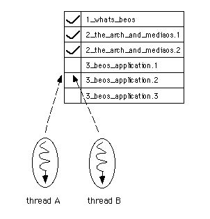
図[3.16] ファイル情報リストで、上から三つまで処理済みマークが付いている様子
ここで重要なのは、二つのスレッドが、お互いにどのようなタイミングで実行されるのかは全く分からないということです。スレッドの実行は、マイクロカーネル内のスケジューラによって制御されており、アプリケーション側からすると、スケジューラによるスレッドの実行切り替えのタイミングを予測できないのです。図3.17に、マイクロカーネルのスケジューラが、実行対象となるスレッドを切り替えていく様子を示します。
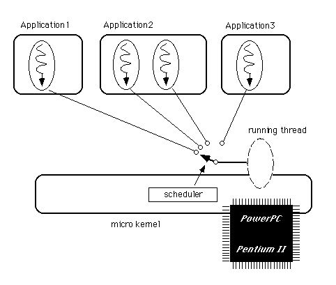
図[3.17] スケジューラによるスレッド実行の制御
スレッドを生成しても、それを実際に動かすCPUの数は限られていますから、適当なタイミングでスレッドの実行を切り替え、あたかも全てのスレッドが同時に動いているようにするのがマルチタスクです。その実行切り替えを制御するのがスケジューラであり、切り替えの方式には大きく分けて二種類あるのは知っているでしょう。BeOSが使っているのは、プリエンプティブ(preemptive)なスケジューリング、つまり現在実行中のスレッドが何をしているかに関係なく、CPUを横取りして他のスレッドに実行を移すやり方です。これは現在殆どのOSが採用しているもので、Windows95/NTもプリエンプティブなスケジューリングです。これに対し、CPUを手放して他のスレッドに実行を移すかどうかをスレッド自身が制御できる方式がコオペラティブ(cooperative)なスケジューリングです。MacOSや、Windows3.xではこの方式を使っています。
プリエンプティブなスケジューリングの方が、スレッドの実行切り替えがスムーズに行われるため、システム全体の動作効率が良くなるのですが、一つだけ欠点があります。それが、いま説明している問題です。スレッド同士の処理の衝突に関する説明に話しを戻しましょう。
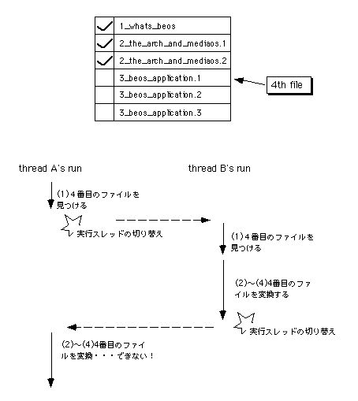
図[3.18] 二つのスレッドの処理が衝突し、共有データが壊れてしまう様子
図3.18は、テキストファイルの文字コード変換を行う二つのスレッドが動作するタイミングを示したものです。考えやすいように、CPUが一つしかないものとします。そして、二つのスレッドは、どちらも前の方に書いた処理手順の(1)に到達しているとします。図3.18では、はじめ一方のスレッド(スレッドA)にCPUが割り当たって実行されています。そして、スレッドAが未処理のファイルとして四番目のファイルをリストから見つけたところで、もう一方のスレッド(スレッドB)に実行が切り替わってしまいます。そうすると、スレッドBもまた未処理のファイルとして四番目のファイルを見つけ、これに対して変換処理を行います。変換処理が終わったところでスレッドAに実行が切り替わるのですが、スレッドAには、既にスレッドBが四番目のファイルを変換し終わったことが分かりません。そのため、スレッドAも四番目のファイルを変換しようとすることになってしまうのです。これは重大なバグです。
プリエンプティブなスケジューリングのもとでは、それぞれのスレッドは、自分から他のスレッドに実行が切り替わるタイミングを知ることができません。さらに、他のスレッドに実行が切り替わったことを知ることすらできません。これが問題を生むのです。この問題を解決するには、他のスレッドに実行が切り替わってはいけない間は切り替えさせない、つまり割り込ませないようにしなければいけません。上の例でいうと、処理手順の(1)～(5)のうち、(1)と(2)の間はスレッドAとスレッドBの間で実行が切り替わらないようにすれば、問題は起きません。さて、(1)と(2)というのは、二つのスレッドが共有するファイル情報リストに対するアクセスです。このように、共有データに対するアクセスの途中でスレッドの実行切り替えが起きることによって問題が生じます。それ以外の場合は、それぞれのスレッドの動作は互いに無関係ですから、実行が切り替わっても問題にはなりません。
マルチスレッドによる並行処理にまつわる問題とは、スレッド間で共有するデータに対するアクセスの衝突を、いかにして防ぐかということです。この問題解決には、ロックを使います。つまり、共有データにアクセスしている間は、それぞれのスレッドがロックをかけることにするのです。他のスレッドがロックをかけると、その後で同じ共有データに対してロックをかけようとしたスレッドは、ロックが解除されるまで待たされます。したがって、共有データにアクセスするスレッド同士の間で、起きてはいけない実行の切り替えが起きるのを防ぐことができるのです。図3.18に対し、ロックをかけることで二つのスレッドの処理内容が衝突するのを防ぐようにした場合の流れを、図3.19に示します。
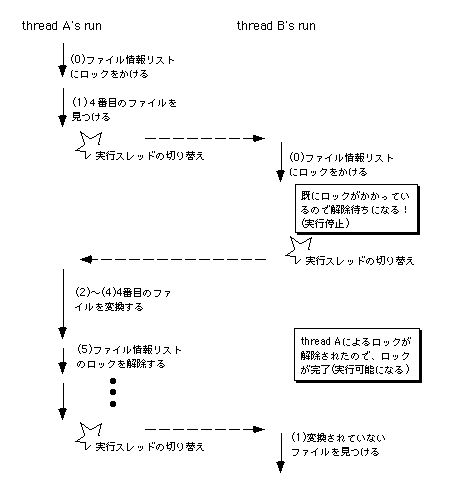
図[3.19] ロックによる排他制御
共有データに対してロックをかけ、一時に一つのスレッドしかアクセスできないようにすることを、排他制御と呼びます。排他制御機構はスケジューリング機構と密接に結び付いているため、OSによって与えられるのが普通ですが、BeOSでもそれは変わりません。BeOSでは、マイクロカーネル(Kernel Kit)が提供するセマフォ、及びSupport KitのBLockerクラスを使って排他制御を行います。BLockerクラスはセマフォを使って実装されているのですが、より簡単に使えるように工夫されています(注3-8)。Windows95/NTでいうと、“mutex”に相当するものです(注3-9)。
一方、セマフォの方は単純な排他制御以外に、複数のスレッド間で同期をとるために利用される汎用的な機構です。マルチスレッド機構を持つOSには必ず用意されているものですし、また通常のアプリケーションではBLockerだけで十分ですから、本書では特に説明しません。セマフォに関する詳しい説明は、BeOSのAPIリファレンスでKernel Kitの章を参照して下さい。また、マルチスレッドプログラミングを解説した本も参考になるでしょう[1]。
BLockerクラスを使った排他制御については第7章のサンプルで実例を示しますが、やり方はとても簡単です。上の説明で使ったデータ変換の例でいうと、共有データ、つまりファイル情報リスト用に、あらかじめBLockerオブジェクトを生成しておきます。次に、データ変換を行うスレッドでは、手順の(1)を行う前にBLockerオブジェクトに対してLock()メソッドを呼び出し、ロックをかけます。この時、既に他のスレッドによってロックがかけられていた場合は、そのスレッドがロックを解除するまで待たされます。次に、手順の(2)を行い、ファイル情報リストに対するアクセスが終わったら、BLockerオブジェクトのUnlock()メソッドを呼び出し、ロックを解除します。もう一方のスレッドがLock()メソッドの呼び出しまで待たされていた場合は、自動的に実行可能状態になり、適当なタイミングでそちらに実行が切り替わります。
- (注)3-8
- BLockerを使うことの利点は、プログラミングが簡単になることだけではありません。BLockerクラス内部では、ロックをかけるためのセマフォ操作を最適化し、必要ない場合はマイクロカーネルの呼び出しを行わないようにして実行効率を上げています。これに対し、セマフォを直接使ってロックをかける場合は必ずマイクロカーネルの呼び出しが起きるため、そのぶんオーバーヘッドが大きくなります。この詳細については、APIリファレンスのセマフォの節にある“Benaphores”の説明を参照して下さい。
- (注)3-9
- Windows95/NTでいう“event”に相当するものは、BeOSのAPIには用意されていません。ただし、セマフォを使って“event”と同様の仕組を実現することは可能です。BeOSでは、できるだけマイクロカーネルのシステムコールやAPIをシンプルにして、そのぶん理解や拡張を容易にしようとしている印象を受けます。
3.3.2 スレッド間通信とメッセージ
マルチスレッドによる並行処理では、スレッド同士が共有するデータのアクセスに対して適切な排他制御を行わないと、問題が生じる場合のあることを説明しました。また、BeOSの排他制御機構には、マイクロカーネルが提供するセマフォ、およびSupport KitのBLockerクラスがあることを紹介しました。次に、BeOSのスレッド間通信機構について説明します。スレッド間通信機構とは、スレッド同士が協調動作するための仕組です。特に、異なるアプリケーション(プロセス)に属するスレッド、すなわち異なるアドレス空間に所属するスレッド同士が情報を交換するための仕組を指します。一方、同じアプリケーションに所属するスレッド同士はアドレス空間を共有するため、大域変数を使って情報交換することが可能です(注3-10)。しかし、これはスレッド間通信機構に含めないのが普通です。BeOSでは、以下の三種類のスレッド間通信機構が提供されています。
■スレッドのメッセージキャッシュ
同期式のメッセージ通信用。すべてのスレッドは、メッセージデータを一つだけ保持できる一種のバッファを持っており、これを「メッセージキャッシュ」と呼びます。ここでメッセージデータというのは、メッセージの種類を示す4バイト長のコードと、任意長のデータを対にしたものです。スレッドにデータを送る場合は、送り先のスレッドが持っているメッセージキャッシュに対してメッセージデータを書き込みます。一方、データを送られたスレッドは、メッセージキャッシュからメッセージデータを読み出すことでデータの受信を行います。
メッセージキャッシュを使った通信では、メッセージの受け手と送り手の間で同期がとられます。つまり、メッセージデータが未だ届いておらず、メッセージキャッシュが空の状態で読み出しを行おうとすると、そのスレッドはメッセージデータが届くまで待たされます。そして、受け手のスレッドがメッセージデータを読み出していない状態でメッセージキャッシュに書き込みを行おうとすると、読み出しが行われてメッセージキャッシュが空になるまで、書き込もうとした側のスレッドは待たされるのです。
■ポート
非同期式のメッセージ通信用。複数のメッセージデータを格納可能な、メッセージキューです。メッセージキャッシュと違い、ポートは単体で生成でき、スレッドから独立した存在です。ポートのメッセージキューにメッセージデータを追加することでデータの送信を行い、データを受信する時は、メッセージキューから先頭のメッセージデータを取り出します。
ポートを使った通信では、メッセージの受け手と送り手間の同期は特にとられません。ポートのメッセージキューには複数のメッセージデータを格納できるので、送り手のスレッドは、メッセージキューにメッセージデータがあるかどうかに関わらず、直ちに書き込み処理を終えることが可能です。ただし、ポートのメッセージキューにはメッセージデータの格納数に上限があり、この上限一杯にメッセージデータが溜まった状態で書き込みを行おうとすると、他のスレッドによって読み出しが行われて空きができるまで待たされます。また、メッセージキューが空の状態で読み出しを行った場合は、他のスレッドによってメッセージデータが追加されるまで待たされます。
■共有メモリ
異なるアプリケーション同士が、仮想記憶を利用して同じメモリ領域を共有するための仕組。BeOSでは「エリア(area)」と呼ぶ機構を持っており、指定したサイズの連続した仮想メモリ領域を確保し、名前とIDで管理することが可能です。エリアのIDはOS(マイクロカーネル)によって割り当てられるもので、システム、つまり同じマシン上で動く全てのアプリケーション間で一意な値です。
異なるアプリケーションは互いに独立したアドレス空間を持っているため、異なるアプリケーションに所属するスレッド同士がデータを共有することは、通常は不可能です(注3-11)。しかし、一つのエリアを複数のアプリケーションが参照することにより、仮想メモリ領域を共有できるのです。この結果、異なるアプリケーションに所属するスレッド同士が、あたかも同じアプリケーションの中で動いているようにデータを共有して処理を進めることが可能になります。共有メモリは、一体一のスレッド間通信ではなく、三つ以上のスレッドが大量のデータを共同処理する場合に便利です。たとえばMedia Kitでは、メディアデータのストリームを複数のアプリケーションが効率良く連携処理できるように、共有メモリ上に確保したバッファを利用しています。
上に挙げた三つのスレッド間通信機構、すなわちスレッドのメッセージキャッシュ、ポート、そして共有メモリを、それぞれ図3.20の(A)～(B)に示します。
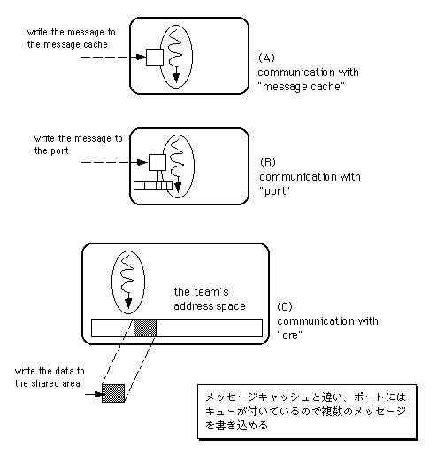
図[3.20] 3種類のスレッド間通信機構
上の図にも示されているように、これら三つの仕組は、異なるアプリケーションに属するスレッド同士が通信するのに利用できます。スレッドとポート、そしてエリアはどれもシステムで一意なIDを持つので、アプリケーションが違っていてもそれぞれを識別できるのです。なお、3.3.1で述べたセマフォもシステムで一意なIDを持ち、異なるアプリケーションに属するスレッド間で共有可能です。したがって、共有メモリへ(エリア)のアクセスに対しても、セマフォを使った排他制御が行えます。
さて、BeOSが提供する三つのスレッド間通信機構のうち、BeOSのAPIで最も大きな役割を果たしているのがポートです。3.2.4でBLooperクラスについて説明しましたが、このクラスはポートを使ってメッセージ通信を行うのです。つまりBLooperクラスは、他のスレッドから送られたメッセージを受信するためのポートと、ポートに届いたメッセージを順に取り出して処理するスレッドを一つに組み合わせたものなのです。そして、この後の説明で詳しく述べるように、メッセージ通信は並行処理において重要な意味を持ちます。メッセージは届いた順に一つずつ処理されるので、それぞれのメッセージに対する処理同士は、絶対に衝突しないからです。
共有データアクセスに対するスレッドの排他制御について説明した3.3.1では、それぞれのスレッドが行う共有データのアクセス処理が順番に行われるように調整し、互いの処理内容が衝突しないようにすることが必要だと述べました。この調整のことを、共有データに対するアクセスの直列化(serialization)と呼びます。並行処理にメッセージ通信を利用するのが重要なのは、この直列化が自然に実現されるからなのです。
- (注)3-10
- 3.3.1の説明に使った例では、二つのスレッドが「ファイル情報リスト」によって互いの進捗状況を知らせ合っていました。このファイル情報リストには大域変数を通してアクセスしますから、二つのスレッドは大域変数を使って情報交換していたことになります。
- (注)3-11
- 仮想記憶を持つ近年のOSでは当り前になったことですが、各アプリケーション、およびOSが互いに独立したアドレス空間を持ち、干渉が起きないようにすることで堅牢性が高まります。アプリケーションが誤って不正なメモリアクセスを行っても、その影響が他のアプリケーションやOSに伝播しないからです。これが「メモリ保護」と呼ばれる考え方なのです。
3.3.3 並行処理と非同期メッセージ
マルチスレッドによる並行処理に関する説明の締めくくりとして、BLooperクラスが果たしている役割、つまりポートを使った非同期式のメッセージ通信の持つ意義について考えてみましょう。非同期式のメッセージ通信を並行処理に利用することには、大きく分けて次の二つの利点があります。■メッセージループによる直列化
BLooperクラスによるメッセージループ処理は、共有データに対する並行処理を二つに分割したものだと考えることができます。二つというのは、共有データの処理を依頼するメッセージをBLooperに送るスレッドと、受け取ったメッセージに従って実際の処理を行う、BLooper内部でメッセージループを実行するスレッドです。つまり、共有データに直接アクセスするスレッドを一つにしてしまい、他のスレッドには処理内容をメッセージで依頼させるようにしているのです。この結果、共有データに対するアクセスが直列化され、メッセージを送る方のスレッドでは明示的な排他制御を行う必要がなくなっています。
■非同期処理による応答性の向上
BLooperにメッセージを送ったスレッドは、BLooperが実際の処理を終える前に次の処理へ進むことができます。したがって、スレッド同士がパイプライン的に処理を行うことができるので全体の処理効率が良くなり、システムの応答性が向上します。なお、BLooperが行った処理の結果を知る必要がある場合は返答メッセージを送ってもらえばよいので、非同期式のメッセージ通信によって生じる問題というのは、特にありません。BLooperが行う処理との間で同期をとる必要がある場合でも、返答メッセージが送られてくるのを待つようにすればよいからです。
BeOSでは、OS内部からアプリケーションに至るまで、スレッドとスレッド間の非同期メッセージ通信による並列化が行き渡っています。アプリケーションやモジュール間の情報伝達は、可能な限りメッセージ通信を用いて行われ、それがシステム全体の応答性と見通しを良くしているのです。実際、アプリケーションをコマンドシェルから起動する際に指定したコマンド引数すら、メッセージを用いて渡されます(注3-12)。当然ながら、ドラッグ&ドロップによるデータ交換にもメッセージが使われます。
このような、マルチスレッドとスレッド間の非同期メッセージ通信の利用は、組み込み機器分野向けのリアルタイムOSでは一般的です。しかし、BeOSのような高機能のデスクトップ向けOSで、OS内部からアプリケーションに至るまで一貫して同じ方式を使い、システム全体の並列度とモジュール性を上げているのは非常に珍しいと思います。
- (注)3-12
- コマンド引数は、他のOSの場合と同様main()の引数として受け取ることができます。BApplicationクラスは、これとは別にメッセージを使ってコマンド引数を渡してくれるのです。もちろん、その場合でもmain()の引数を利用することは可能です。
3.4 データの保存
ここまでの説明、特に3.2節と3.3節では、BeOSアプリケーションの内部動作を理解するうえで基本となる、マルチスレッドによる並行処理とスレッド間のメッセージ通信について詳しく説明しました。これより後は、アプリケーションがデータを保存して利用するための仕組み、つまりBeOSのファイルシステムやデータの保管機構について説明します。この節でBeOSのファイル機構の特徴的な部分を説明し、最後の3.5節では、構造化データの保存やデータ交換に便利な仕組の説明を行い、それでこの章を終わります。では、BeOSのファイル機構について説明しましょう。以下に、BeOSのファイルシステムが持つ特徴を示します。
a.)一般的な階層構造
b.)単一の「フォーク」とリソースファイル
c.)ユーザ定義可能なノード属性
d.)ノード属性に対するインデックス付けと検索
e.)MIMEによるファイルタイプ情報の分類と管理
これらの特徴について、順に説明します。
■一般的な階層構造
ファイルシステムは、他のOSと同様の階層構造を持ち、それによって外部ファイルシステムとの親和性が高くなっています。実は、1997年に発表された"Preview Release"以前のバージョンでは、BeOSのファイルシステム構造は他のOSとかなり違っていました。階層構造は持っていたものの、ディレクトリやファイルなど、ファイルシステムの各要素がデータベースのレコードとして実現されていたのです。つまりファイルシステム自体がデータベースになっていたのですが、外部ファイルシステム、すなわち他のOSのボリュームをマウントしてアクセスするのが簡単になるように、一般的な構造を持つものに変更されたという歴史があります。
■単一の「フォーク」とリソースファイル
MacOSでは、すべてのファイルは「データフォーク」と「リソースフォーク」という二つの領域を持っており、柔軟なデータ管理を可能にしています。データフォークはファイルに格納されるデータ本体を格納する領域、そしてリソースフォークは、スタイル付きテキストのスタイル情報や、アプリケーションのリソースデータなど、付加的なデータを格納するための構造化された領域です。これに対し、BeOSではその他のOSと同じく、単一の「フォーク」しか持ちません。したがって、ファイルに対するデータの読み書きはUnix系OSやWindowsと同様です。つまり、ファイルは構造を持たないバイト列を格納したものであり、その内容を解釈するのは全てアプリケーションに任されています。
MacOS方式が特に便利なのは、アプリケーションのリソースデータを編集するのが簡単なことです。ウィンドウのタイトル、それからメニューやボタンのラベルなどは全てリソースデータとしてリソースフォークに保存されており、データフォークとは独立して内容の変更が可能です。したがって、データフォークに格納されたアプリケーションの実行コード、すなわちアプリケーション本体に影響を与えることなく、リソースデータを編集できるのです。これによって、メニューやボタンのラベルなどを英語から各国語に変更して各国語対応させる「ローカライズ」作業を楽にしています。
BeOSのAPIでは、MacOS方式と同様の利点を実現するために、ファイル全体をリソースフォークとして扱えるようにしています。つまり、構造を持たない、通常のデータファイルとしてアクセスしたい時は普通のファイルとして開き、リソースデータにアクセスしたい時には「リソースファイル」としてファイルを開けばよいのです。個々のリソースデータは型とIDを使って管理され、必要なデータ項目だけにアクセスすることが可能です。つまりリソースファイルは一種の構造化ファイルとして働くのですが、MacOSのリソースフォークに比べると、限定された機能しかありません。
BeOSのリソースファイル機能は、Support KitのBResourcesクラスによって提供されています。BResourcesクラスが持つ構造化ファイル機能は限定されたものであり(注3-13)、主にアプリケーションのリソースデータ用に提供されているものです。また、リソースデータの保存形式はCPUのバイトオーダに依存しているため、PowerPC版とIntel版のBeOSの間で、リソースファイルを交換することができないという欠点もあります。したがって、通常のデータファイルに対して利用しないようにすべきです。Be社では、スタイル付きテキストのスタイル情報など、付加的なデータを本体のデータから分離して保存する場合には、次に述べるノード属性を利用するように勧めています。
■ユーザ定義可能なノード属性
BeOS独自のファイルシステム(BeFS)には、他のOSにない特徴が一つあります。ファイルやディレクトリなど、ファイルシステムの階層木を構成する各ノードに対し、任意の属性を設定できるのです。たとえば、Trackerはフォルダウィンドウが閉じられたときのサイズと場所をフォルダ(ディレクトリ)の属性として記録しています。フォルダウィンドウを開くと最後に閉じたときのサイズと場所が復元されますが、それはTrackerが記録した情報を利用しているからなのです。また、“Mail Kit”では一通一通のメールをファイルとして保存し、それを管理するための属性のセットを定義して使っています。
属性とは名前と値の対であり、任意サイズのデータを値にセットできます。また、属性の名前はそれぞれのノードに対して一意であり、同じ名前の属性を複数持つことはできません。ノード属性をアクセスするAPIとして、Storage KitのBNodeクラス、およびKernel Kitのノード属性操作手続きが提供されています。なお、Be社のAPIリファレンスではどちらもStorage Kitの章に説明が載っています。第9章の説明では、独自に定義した属性を使ってドキュメント管理を行うアプリケーションの例を示します。
■ノード属性に対するインデックス付けと検索
ノード属性のうち、数値型または文字列型の値を持つものに対しては、検索用のインデックスを生成することができます。属性に対してインデックスを生成すると、以後その属性を任意のノードに追加するたびにインデックスが更新されます(注3-14)。このインデックスは、Storage KitのBQueryクラスを使ったノード検索に利用できます。ノード検索では、インデックス付けされた属性を検索キーに使い、問い合わせ文を作成して検索を行うのです。
つまり、BeFSはノード属性とインデックスの組み合わせによって一種のデータベース機能を提供しています。もちろん、ファイルシステムのノードはデータベースのレコードではありませんし、またノード属性もレコードとはいえません。しかし、一般的な階層構造を持ち、外部ファイルシステムとの親和性を実現すると同時に簡易データベース機能も実現しているのは、BeFSの便利な点です。
なお、ファイルシステムのノード検索を行うためのAPIは、Storage KitのBQueryクラスだけでなく、Kernel Kitのノード検索手続きとしても提供されています。ノード属性をアクセスするAPIの場合と同様、Kernel KitのAPIを利用してStorage KitのAPIが実装されています。また、Storage Kitの高レベルAPIとKernel Kitの低レベルAPIが、ともにAPIリファレンスのStorage Kitの章で説明されているのも同様です。第9章の説明に使うドキュメント管理ツールのサンプルでは、Kernel Kitのインデックス操作APIを使って属性に対するインデックス付けを行い、またStorage KitのBQueryクラスを使って検索処理を行います。
■MIMEによるファイルタイプ情報の分類と管理
BeOSでは、ファイルとアプリケーションの関係付けを「ファイルタイプ」属性と「ファイルタイプ・データベース」によって実現しています。ファイルタイプ属性とは、ファイルに格納されたデータの種類を示すためにシステムで定義しているノード属性です。また、ファイルタイプ・データベースとは、システムに登録された各ファイルタイプについて、それを扱うことができるアプリケーションの一覧や、割り当てられたアイコンなどの情報をデータベース化したものです。ファイルタイプデータベースの内容は、プリファレンスの“FileTypes”で編集することができます。
ファイルタイプの分類体系にはMIMEを利用しており、スーパータイプとサブタイプを組み合わせた柔軟な管理が可能になっています。つまり、単純に「テキストファイル」と一括りにするのではなく、“text/plain”(プレーンテキスト)や“text/html”(HTMLテキスト)、また“text/x-source-code”(ソースファイル)のように、細かく分類できるのです。これは、Unix系OSやWindowsで一般的なファイルの拡張子に基づく分類に比べると非常に便利です。さらに、スーパータイプだけを与えた“text”というファイルタイプ指定によって、「テキストなら何でも受け付け可能」ということを表現できるので、表現の幅が格段に広がっています。図3.21に、ファイルタイプ属性とファイルタイプ・データベースによって、ファイルとアプリケーションが関係づけられる様子を示します。
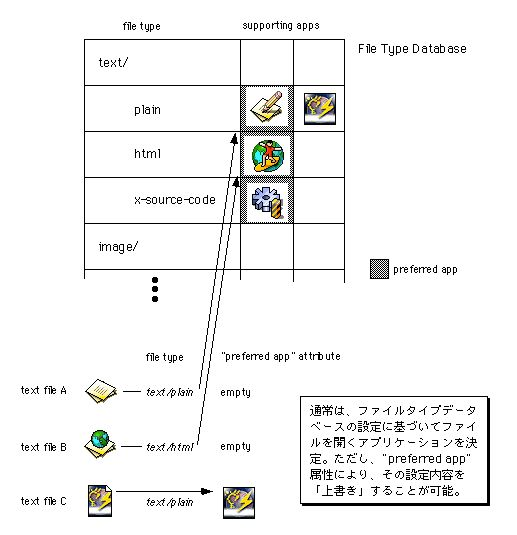
(ファイルのファイルタイプ属性と、ファイルタイプ・データベースに登録され図[3.21] ファイルとアプリケーションの関係づけ
たアプリケーションのサポートファイル情報を組み合わせ、起動すべきアプリ
ケーションが割り出される手順を図示)
※テキストファイルを例にして
BeOSのファイルタイプ体系は、MacOSと比べても優れています。MacOSでは、個々のファイルがデータタイプとアプリケーション情報(「クリエータ」)を持っているだけであり、ファイルとアプリケーションの関係づけが固定されています(注3-15)。これに対し、BeOSではファイルとアプリケーションの関係づけを二段階に設定できるので、そのぶん自由度が高いのです。二段階というのは、ファイルタイプ・データベースでの設定と、個々のファイルのノード属性を使った設定です。ファイルタイプ・データベースに設定されたファイルタイプとアプリケーションの関係づけはデフォルトとして使われますが、それに加え、個々のファイルに対して、それと関連づけるアプリケーションの情報をノード属性として設定できるのです。
図3.21に示したように、ファイルに関連づけられたアプリケーションを見つけるときは、まずファイルのノード属性に設定されたものがあればそちらを優先し、ない場合にはファイルタイプ・データベースの設定内容に従います。つまり、ファイルタイプ・データベースによって一般原則を与え、ファイルごとに個別の設定を行う場合にはノード属性を使って指定するのです。これは、MacOSの“Easy Open”に比べると単純で理解しやすい仕組です。Unix系OSやWindowsの拡張子方式と比べても十分単純ですし、もちろん、それらよりずっと強力です。また、本来MIMEはインターネット経由のデータ交換でデータの種類を示すのに使われる分類体系ですから、そのMIMEを利用したBeOSのファイルタイプ体系は、インターネットを介したファイル交換との親和性が高いという利点もあります。
なお、各アプリケーションを一意に識別するための「シグネチャ」(MacOSのクリエータに相当)もMIME文字列で与えることになっており、“application/x-vnd.<企業または個人名の略号>-アプリケーション名>”の形式を使います。これを見ると分かるように、アプリケーションのシグネチャもファイルタイプとして実現されています。言い換えると、ファイルのデータタイプを分類する仕組とアプリケーションを識別する仕組とが、単一の枠組みで実現されているのです。なるべく少ない構成概念でシステムを作り上げ、理解を容易にしようというBeOSの姿勢を、ここにも見ることができます。
以上で、BeOSのファイルシステムが持つ特徴の説明を終わります。
- (注)3-13
- BResourcesクラスを使っても、既存のデータファイルにリソースデータを付加することはできません。リソースファイルは特別なデータ書式を持っており、最初からリソースファイルとして作らないといけないのです。言い換えると、リソースファイルを通常のデータファイルとして開くことはできても、その逆はできません。なお、リソースファイルのバイトオーダ依存によるPowerPC版とIntel版の間での非互換性は、BeOSの今後のバージョンで改善される可能性があります。
- (注)3-14
- ノード属性に対するインデックス付けは、ボリュームごとに行われます。したがって、インデックスを生成したボリュームとしないボリュームがある場合、インデックスを生成しなかった方のボリューム上のノードに属性を設定しても、それはインデックスの内容に反映されません。
- (注)3-15
- MacOSの“Macintosh Easy Open”というコントロールパネルでは、ファイルのクリエータに設定されたアプリケーションが見つからない場合、他のアプリケーションが代わりにファイルを開けるようにするための仕組を提供しています。しかし、その代行アプリケーションとファイルの関係づけは、やはり固定されたものです。
3.5 BMessageと構造化データ
この章の最初の節で、BMessageクラスを利用すると構造化データの入出力処理が簡単になると述べました。この節では、それについて説明します。BMessageクラスは、オブジェクトや構造体をファイルに保存したり、またネットワーク経由で転送したりする場合に便利な機能として、次の二つを備えています。■アーカイビング(archiving)
オブジェクトの状態、つまりオブジェクトのデータメンバや構造体の内容を保存し、後で復元することができます。BMessageクラスは構造化データを保管するコンテナとしての機能を持っており、任意の型のデータを名前付きで保存し、それを好きなタイミングで取り出すことができます。保存するデータ要素は名前と型を使って識別されますが、同じ名前と型を持つデータ要素を複数保存することが可能です。その場合、複数あるうちの個々のデータ要素を指定するにはインデックスを使います。
Support Kitでは、BMessageに対するアーカイビング手順が簡単になるようにBArchivableというクラスが提供されています。アーカイブ可能なクラスを作るときは必ずBArchivableクラスを継承するようにしておくと、どのクラスに対しても共通のメソッドを呼び出してアーカイビングを行えるので、全体の処理が単純になるのです。実際、Interface KitのBViewクラスはApplication KitのBHandlerクラスを経由してBArchivableクラスを継承しています。これにより、全てのビュー部品がアーカイブ可能になっており、2.5節の最後で述べたレプリカントの実現を容易にしています。
■フラット化
内部に保管している構造化データを、構造を持たないバイト列に変換します。変換したバイト列は、後で読み込んで元のデータを復元するのに使えます。この機能は、BMessage自身をファイルへ保存する場合に便利です。バイト列への変換処理、すなわちフラット化を行う際はCPUのバイトオーダ情報を一緒に記録し、バイトオーダに依存しないようにしてくれます。したがって、PowerPC版のBeOSとIntel版のBeOSの間で、BMessageをフラット化して保存したファイルを交換することができるのです。もちろん、ネットワーク経由でデータ交換を行う場合も問題ありません。
構造化データをファイルに保存する場合、異なるハードウェアプラットフォーム間でデータ交換しようとした時に、CPUのバイトオーダやワードサイズの違いが問題になります。構造化データを単純に保存してしまうと、それらのパラメータに依存したままの内容が保存されるため、バイトオーダやワードサイズが異なるプラットフォーム上で読み取ろうとしても、正しく読み出すことができないのです。BMessageのフラット化機能を利用すれば、このような問題は生じません。
オブジェクトや構造体をファイルに保存するときは、上に述べた二つの機能を組み合わせて使います。つまり、保存したいオブジェクトや構造体をBMessageにアーカイブし、それからそのBMessageをフラット化してファイルに書き込むのです。ファイルから復元する時は、その逆の手順を踏みます。つまり、フラット化したデータをファイルから読み出し、フラット化解除してBMessageを初期化します。そして、BMessageの中からオブジェクトや構造体を取り出し、復元するのです。図3.22に、この様子を示します。
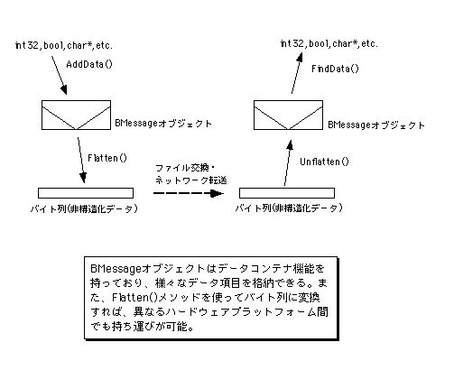
図[3.22] オブジェクトの保存と復元
アーカイブと復元を行うには、BMessageクラスのAddData()メソッドとFindData()メソッドを使います(注3-16)。アーカイブする場合は、AddData()メソッドを繰り返し呼び出し、オブジェクトや構造体のデータメンバを一つずつBMessageに書き込みます。復元する場合は逆で、FindData()メソッドでデータメンバを一つずつ読み出し、復元用に生成したオブジェクトや構造体を初期化します。なお、オブジェクトがBArchivableまたはそのサブクラスのインスタンスであれば、そのオブジェクトに対してArchive()メソッドを呼び出すだけでアーカイブできます。また、復元する場合もSupport Kitのinstantiate_object()関数を使うだけ済みます。これは、データメンバの書き込み処理と読み出し処理がクラス側(Archive()メソッドとInstantiate()メソッド)で実装されているからです。BMessageに対するアーカイブと復元の次は、BMessage自身のフラット化とフラット化解除です。これを行うには、BMessageクラスのFlatten()およびUnflatten()メソッドを呼び出すだけです。したがって、あとはフラット化されたデータをファイルに保存するか、またはファイルから読み出せば終わりです(注3-17)。
アーカイビングとフラット化について、一つ補足しておきましょう。JavaやWindowsには、「オブジェクトの直列化(object serialization)」という用語がありますが、これはBeOSでいう「アーカイビング」と「フラット化」を合わせたものに相当します。BeOSで「直列化」という用語を使わないのは、混乱を避けるためだと思われます。3.3節の説明(3.3.2)で、複数のスレッドが共有するデータに対する同時アクセスを制御し、アクセスが順番に行われるようにすることを「直列化」と呼ぶと述べました。この語用は並行処理分野で一般的なものであり、並行処理が基本のBeOSにとっては、「直列化」といえばそちらを指すのが自然です。したがって、「オブジェクトの直列化」という用語ではなく、「アーカイビング」と「フラット化」という用語を使っているのでしょう。筆者も、どちらかといえばBeOSの語用の方が自然だと考えています。
以上で、BMessageが提供しているデータの保存機構の説明を終わります。BMessageクラスには、上に述べたデータコンテナ機能に加え、ドラッグ&ドロップやスクリプティングに便利な機能も用意されています。BMessageクラスの具体的な利用例は、第6章のサンプル、およびアプリケーション間通信を扱った第8章のサンプルで示します。
- (注)3-16
- 数値型や文字列型、またBeOSのAPIで基本型として使われるデータ型については、専用のメソッドが用意されています。たとえば、座標位置を表わすBPointクラスをBMessageへ追加するには、AddPoint()というメソッドを利用できます。当然ながら、このメソッドはAddData()を使って実装されており、他のデータ型についても同様です。
- (注)3-17
- BMessageを使ってオブジェクトを転送した場合、転送されるのはオブジェクトのデータメンバだけです。つまり、メソッドを定義した実行コードは送られません。したがって、受け手側ではそのオブジェクトが所属するクラスに関する実行コードにアクセスできないと、オブジェクトを復元することはできません。レプリカント機構では、オブジェクトを転送する際に実行ファイル情報を一緒に渡します。受け手側のアプリケーションでは、オブジェクトの実行コードが自分の中にない場合、教えられた実行ファイルをadd-onとしてロードし、実行コードを入手するのです。
参考文献
[1]「Win32 Multithreaded Programming」Aaron Cohen & Mike Woodring,
O'Reilly & Associates, Inc., 1998
ISBN 1-56592-296-4
Art of BeOS Programming
koga@stprec.co.jp